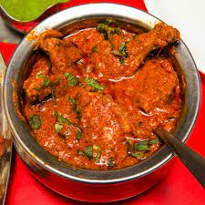

CHICKEN BIRYANI
INGREDIENTS
- 1 cup boiled basmati rice
- 1/2 teaspoon mint leaves
salt as required
- 2 tablespoon refined oil
3 green cardamom
- 2 clove
2 onion
1 teaspoon turmeric
- 1 tablespoon garlic paste
1 cup hung curd
2 tablespoon coriander leaves
water as required
- 1 tablespoon ghee
600 gm chicken
1 tablespoon garam masala powder
1 teaspoon saffron
- 1 tablespoon bay leaf
1 black cardamom
1 teaspoon cumin seeds
4 green chillies
- 1 tablespoon ginger paste
1 teaspoon red chilli powder
1/2 tablespoon ginger
2 drops kewra
1 tablespoon rose water
RECIPE
- STEP 1
- To make a deLightful chicken biryani dish firstly soak saffron in water to prepare saffron water (One tsp saffron can be soaked in 1/4 cup water).
Next, mix kewra drops in water and mix well to make kewra water. Set them aside for later usage. Now chop the onion and coriander leaves and keep them aside
.jpeg)
- STEP 2
- Meanwhile, heat refined oil in a deep bottomed pan. Once the oil is hot enough, add cumin seeds, bay leaf, green cardamom, black cardamom, cloves in it, and saute for about a minute. Then, add chopped onion to it and saute until pink. Now, add chicken into it with slit green chillies, turmeric, salt to taste, ginger garlic paste, red chilli powder and green chilli paste.
Mix well all the spices and cook for 2-3 minutes. Then, add hung curd into it and give a mix. (Make sure the chicken is washed properly and patted dry before adding it to the dish)
- STEP 3
- Turn the flame to medium again and add garam masala in it along with ginger julienned, coriander and mint leaves. Add kewra water, rose water and saffron water in it. Cook till the chicken is tender.
Then add 1 cup cooked rice and spread evenly. Then add saffron water and pour ghee over it. You can now cook the dish without the lid or cover it with a lid to give a dum-effect due to the steam formation

- STEP 4
- Serve hot chicken biryani with your favourite chutney or raita
Cook for 15-20 minutes with a closed lid and garnish with 1 tbsp fried onions and coriander leaves. Serve hot chicken biryani with raita of your choice. Enjoy!